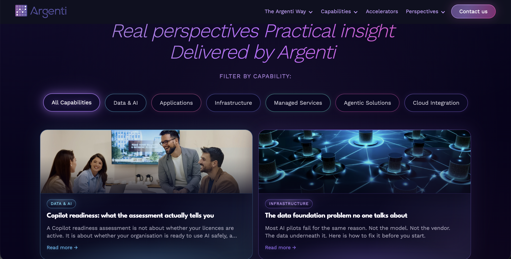

Webflow
CMS-driven production website
How a focused Webflow redevelopment grew into a connected website platform spanning reusable systems, CMS architecture, custom front-end development, responsive implementation, performance, QA and handover.
CMS-driven production website
Custom front-end functionality
Templates · shared categories · filters
Mobile · Desktop 79 → 92
As the project expanded, the challenge became building a website Argenti could continue using after launch, with reusable foundations, structured content and enough flexibility for the team to keep growing it without rebuilding the experience.
Reusable Webflow foundations
Connected publishing
Custom front-end logic
Custom visual systems
Performance + launch
01 · Webflow Architecture
Argenti didn't begin with a perfectly mapped design system. As the website expanded, I could see where one-off classes, page-specific decisions and repeated overrides were becoming harder to manage.
Spacing was one of the clearest examples. Something could look completely resolved in one view and then behave differently once the page was published or tested at another breakpoint. That pushed me to stop treating each spacing issue as an isolated fix and start asking which shared system actually owned the layout.
I brought together typography, layouts, buttons, colour treatments, grids, content wrappers and common components while progressively consolidating existing page-specific systems where it made sense. The goal wasn't to rebuild everything purely for consistency; it was to make future changes safer, clearer and easier to trace.
Reusable heading, body and supporting text treatments
Content wrappers, grids and responsive section patterns
Buttons, cards, CTAs, capability tags and image treatments
Shared systems where possible and isolated page logic where genuinely necessary

02 · CMS Architecture
Blog Posts, Authors, Case Studies and Accelerators needed to behave as connected content systems rather than pages rebuilt manually every time something new was published.
Capability categories help organise content across the site, while also supporting filters, visual treatments and related content.
The team updates content through CMS fields while the templates control how it appears across the website.


03 · Custom Code and Debugging
As the website became more complex, some problems stopped being purely Webflow problems. CMS relationships, custom code, responsive behaviour, third-party scripts and runtime state could all interact with one another.
What looked like a simple filter interface depended on CMS categories, capability and industry values, Finsweet attributes, template behaviour and visual colour logic.
Instead of continuing to change the design, I inspected the published state with DevTools and traced the behaviour back through the systems that actually owned it.
Identify the owning system and fix the source of the issue rather than adding another patch to hide the symptom. This became one of the biggest technical lessons I took from the build: the visible problem is not always where the problem actually lives. Once I stopped asking “what can I add to fix this?” and started asking “which system owns this behaviour?”, debugging became much clearer.
I am strongest where Webflow stops being simple
04 · Custom Implementation
Not every important section could come from a standard component library. Some parts of the site needed their own visual and responsive logic while still belonging to the wider Argenti design language.
These sections combined Webflow structure with custom CSS, responsive rules and page-specific implementation where the shared system alone was not enough.


05 · Performance and Release
Performance, responsive behaviour, CMS output, forms, tracking and production behaviour were treated as part of development rather than something to check once the design looked finished.


Google PageSpeed Insights · Live production testing · 21 August 2026 · Lighthouse scores are laboratory estimates and can vary between runs.
Responsive behaviour, CMS templates, navigation, forms, HubSpot, consent, tracking, redirects, legal links, browser behaviour and performance were included in final verification.
CMS administration, the Style Guide, custom-code ownership, integrations, troubleshooting and launch processes were documented so the team could understand what they were inheriting.
The Result
The finished website became a connected Webflow platform Argenti can publish into, measure, maintain and continue growing. Supported by reusable architecture, structured CMS publishing, custom front-end development, technical QA and documented handover.